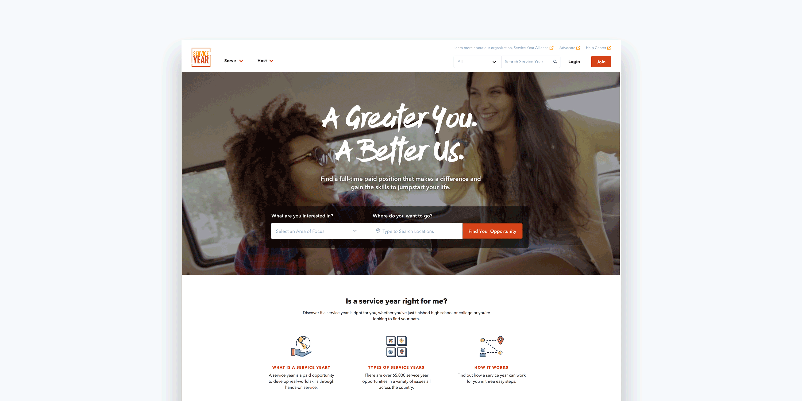
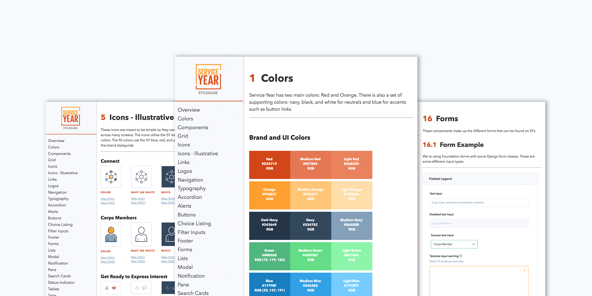
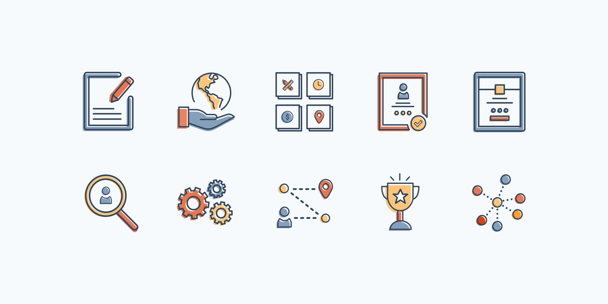
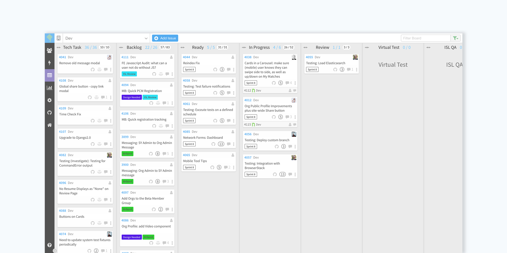
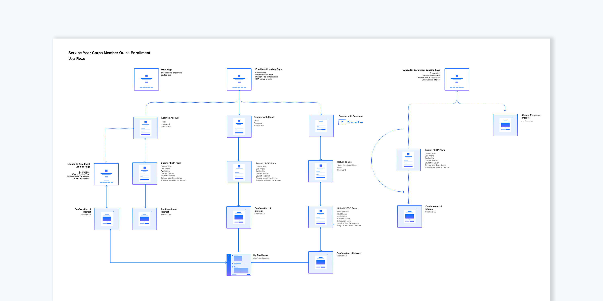
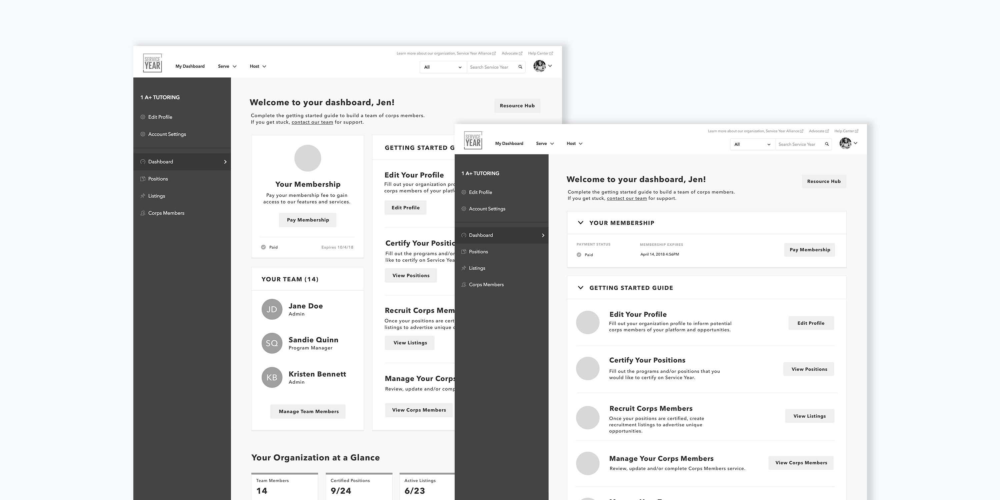
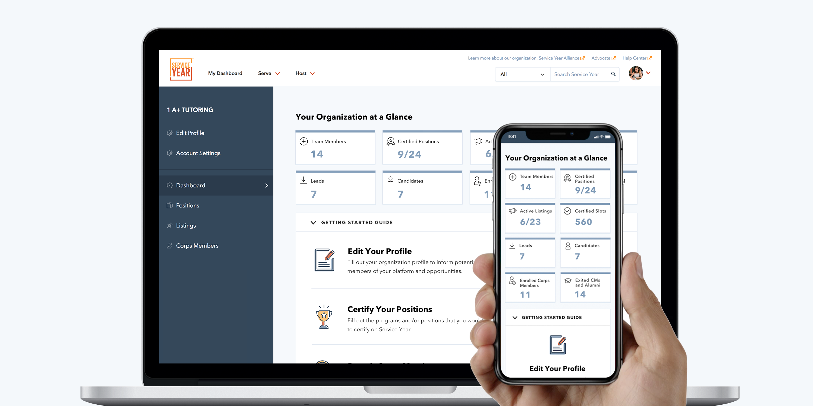
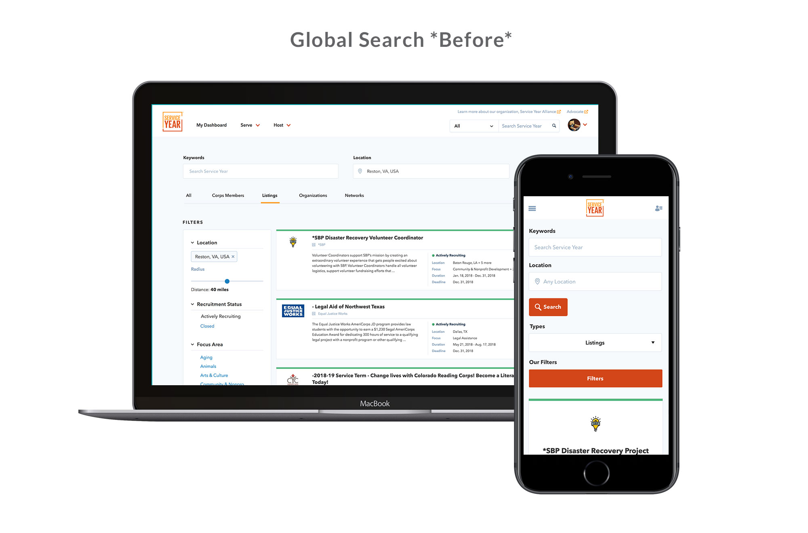

Service Year Exchange is a platform which serves as a marketplace to connect motivated young people looking to develop real-world skills with non-profit organizations offering hands-on service opportunities. Our client, Service Year Alliance, approached ISL with a big idea — make a service year a common expectation and opportunity for all young Americans. I served as the product designer and worked closely with a team of developers, project managers, and our client, the Service Year Alliance to bring their vision to life.
Visit Service Year
Complete with organization and corps member profiles, robust search capabilities, and custom dashboard interfaces, our interdisciplinary team continues to build new features and optimize the platform in partnership with our hands-on client team. The platform currently features and serves over 45,000 service opportunities, over 100,000 corps members, and hundreds of non-profit organizations across the country.
Our design and development teams collaborated to create this living style guide for Service Year. This style guide is constantly evolving which allows for iteration and collaboration between designers, developers and our client.
 Our team’s iterative approach to design and development has enabled us to quickly adapt in an environment where requirements and technology are rapidly changing. Our team uses agile development to quickly design and build iterations of the Service Year platform.
Over the course of the project, I've been able to take a feature from it's initial discovery/research to user flows and wireframes and to final designs and prototypes. I used data and insights to drive all my decisions and always pushed for consistency throughout the system using component-driven designs.
   